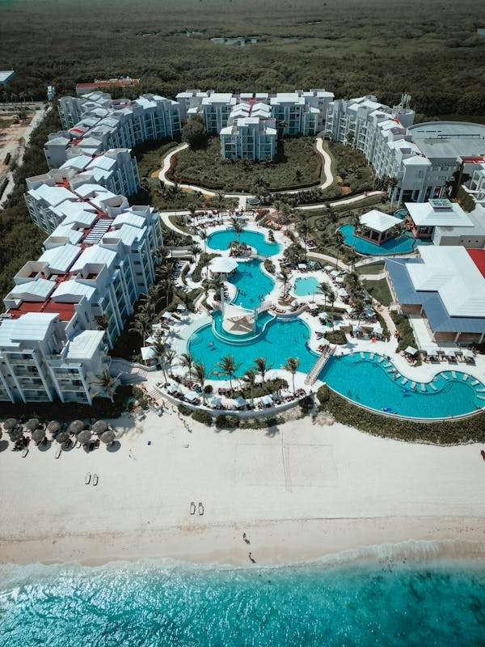
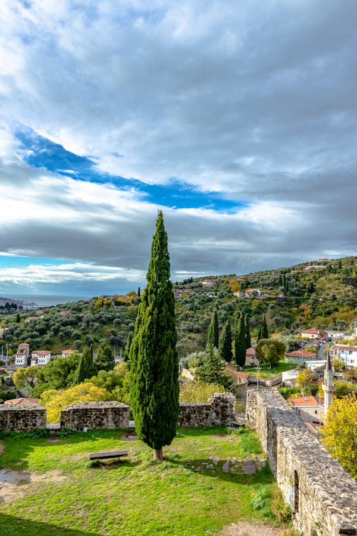

I dream of the day I’ll get to escape with Pocotito to a quiet seaside town — where the breeze plays with her hair and we leave footprints on the shore as the sun dips into the horizon. Just peace, waves, and us.

We’d roam unfamiliar streets, getting caught in the charm of the city — strolling slowly, hands intertwined, fascinated by the beautiful scenery created by the gorgeous tall trees. Every corner would feel like a scene from a love story we’re writing together.
Somewhere far from the noise, I see us walking through the stillness of the desert — just warmth, wide skies, and soft conversations. No distractions. Just her hand in mine, and the world unfolding slowly in front of us.